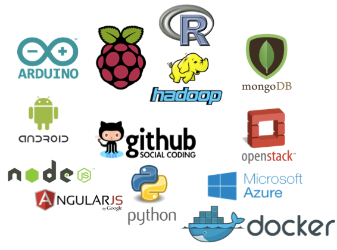
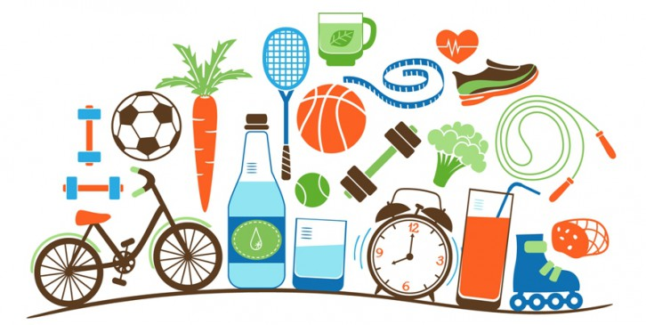
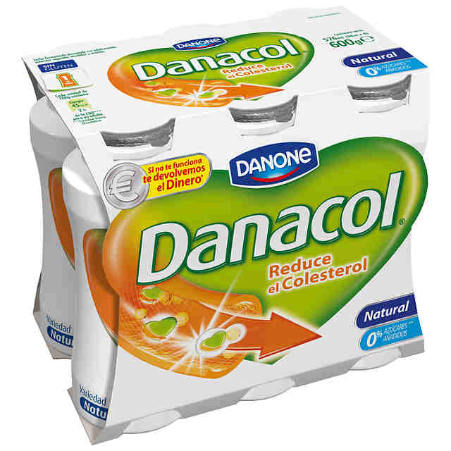

Seminarios DI
Compartir lo que aprendemos
Algunos nombres del momento

¿Te reconoces?
¿Y así?
No te preocupes, hay solución

Danacol, uno de vez en cuando

Seremos otros
Seminarios DI
Uno de vez en cuando
Compartir lo que aprendemos
Chaaaan